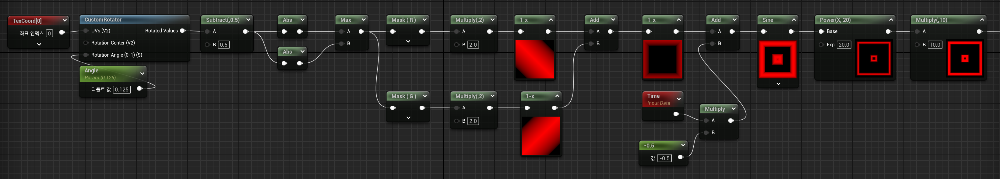
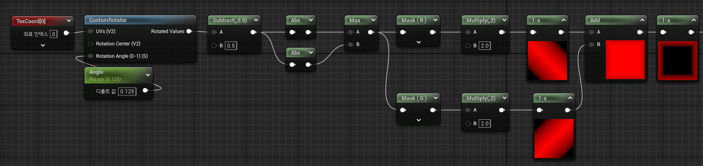
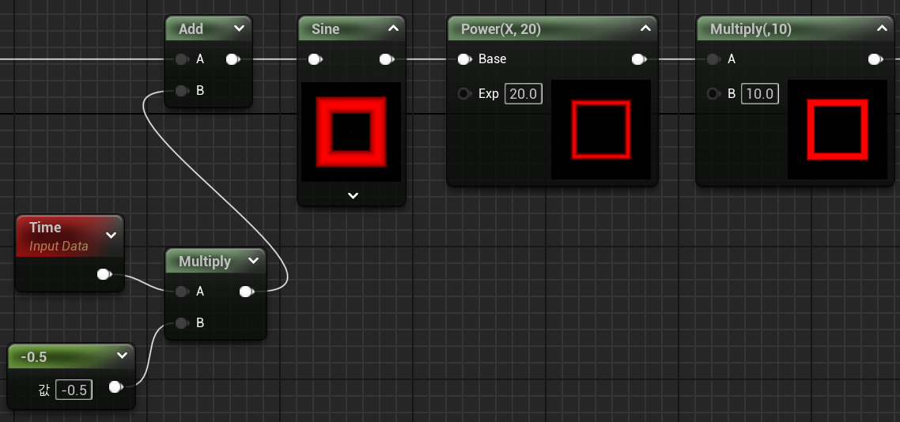

노드 구현 포인트
공용으로 사용 가능한 사각형 마스크
시간 조절 가능
각도를 통한 다이아몬드 형태의 마스크도 가능

노드 풀이
UV 좌표 회전 (CustomRotator)
TexCoord → CustomRotator → Angle
TexCoord: UV 좌표를 가져옴.
CustomRotator: UV 좌표를 회전시키는 역할.
Angle 파라미터로 회전 각도를 조정.
중심 기준 회전 적용.
UV 중심 정렬 및 사각형 패턴 생성
Subtract(0.5) → Abs → Max → Mask
Subtract(0.5): UV 좌표를 (0,0) 중심으로 이동.
Abs: UV 좌표의 절대값을 가져와 양수 범위로 변환 (대칭성 유지).
Max: X, Y 중 더 큰 값을 유지하여 사각형 마스크를 생성.
Mask (R/G): 특정 채널의 값을 활용하여 패턴을 분리.
사각형의 크기 및 형태 조정
Time → Multiply → Add
Multiply(2.0): UV 좌표를 확대하여 사각형 크기 조정.
1-x: 값을 반전하여 마스크를 반전.
4) 애니메이션 효과 적용
Time: 시간 데이터를 가져옴.
Multiply(-0.5): 애니메이션 속도를 조정.
Add: 애니메이션 오프셋 적용.
패턴 강조 및 대비 조정
Sine → Power → Multiply
Sine: 주기적인 패턴을 생성.
Power(X, 20): 대비를 극대화하여 테두리를 강조.
Multiply(10): 최종적으로 값의 강도를 높여 패턴을 더욱 뚜렷하게 만듦.

